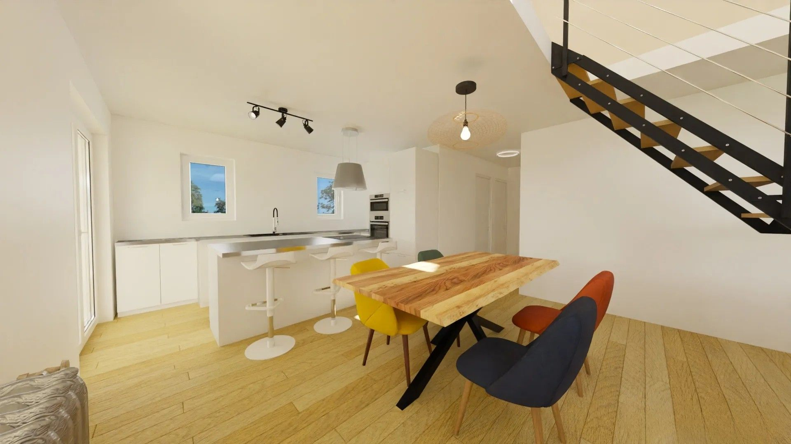
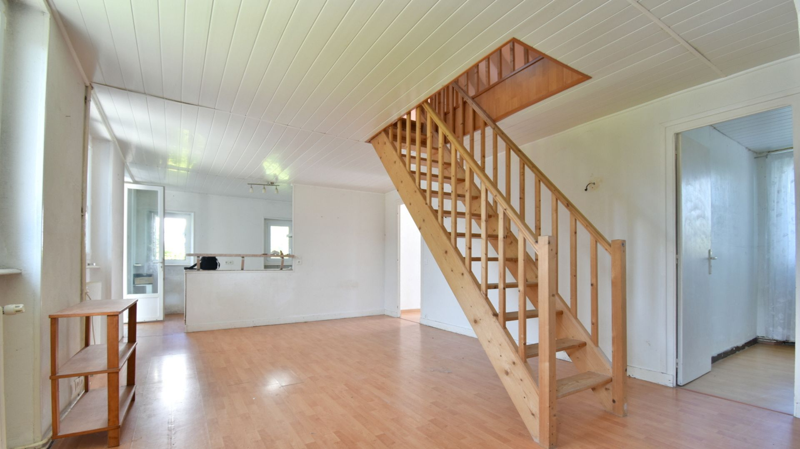
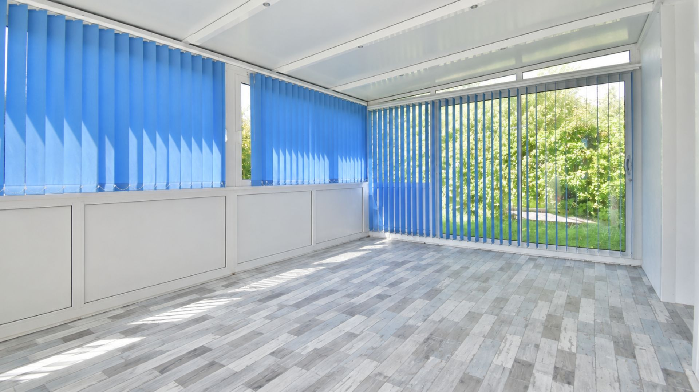
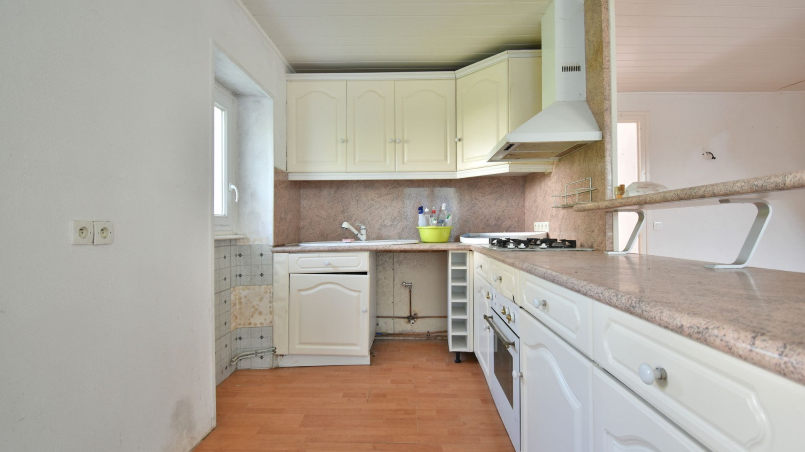

La maison
Les volumes, la lumière, la sensation
On pousse la porte, on entre dans le séjour de 31 m², on voit la véranda qui prolonge l'espace vers le jardin. On sent que cette maison a été pensée pour vivre dedans.

70 m²Habitables
85 m²Potentiel
21,6 m²Véranda (2019)
2+2Chambres
Construite entre 1948 et 1974, la maison développe 70 m² habitables sur un niveau, avec un potentiel de 85 m² après aménagement des combles. Le séjour de 31,7 m², une cuisine séparée, deux chambres, une salle d'eau et un WC composent le rez-de-chaussée. La véranda Gustave Rideau (2019) ajoute 21,6 m² de lumière.



